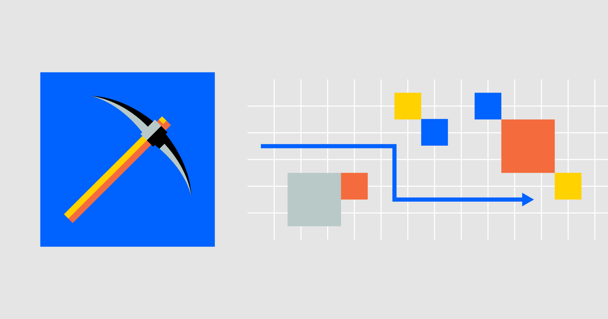
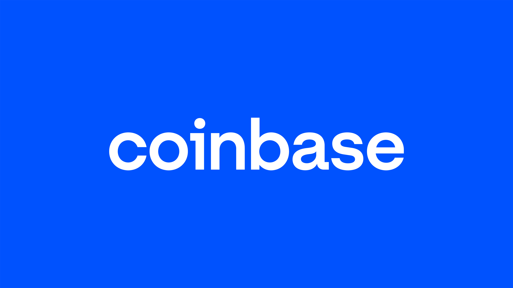

Proof of work
factoring based transaction (UTXO)
Game theory
30 min target blocktime
49 TPS
Operating since April 20, 2022
Nakamoto consensus
R & D funded by Coinbase
FACT0RN Blockchain: Integer Factorization as Proof-of-Work (PoW)
Proof-of-work (PoW) is the original scheme to secure blockchain technology introduced in
2009 by Satoshi Nakamoto through the Bitcoin whitepaper. An analysis done in late 2021
by the New York Times on the electricity usage of the Bitcoin network indicated that
the lowest electricity consumption estimate was on par with the total electricity consumption
of Washington State for a year — and more than 7 times as much as Google’s global operations.Just this month, Forbes reported on a bill that is in the works in New York State, as well as leaked European Union Documents, that signal to ‘A De Facto Ban` on proof-of-work mining in general, for Bitcoin and otherwise. It is worth noting that by and large PoW blockchains are based on some form of hashing — a mathematical function that is easy to compute forward and hard to reverse given an output.
There is a blockchain that uses finding prime constellations as its proof of work, and yet another searches for chains of prime numbers known as Cuningham Chains as its PoW. Vitalik Buterin published an article on July 7, 2013 on Bitcoin Magazine about the latter titled “Primecoin: The Cryptocurrency Whose Mining is Actually Useful” where he observed that “One of the disadvantages of Bitcoin that its proponents often gloss over is the fact that its mining algorithm has little real-world value. ” ...

All candidates demonstrated a consistent history of contributing to blockchains, as well as innovative ideas, and provided the Fund’s advisory board with a clear, actionable outline of the projects they intend to work on. They will both be funded to work on their projects for all of 2022, with their grants funded in BTC or USD based on the recipient’s preference...
Escanor Liones (github, X former twitter) will be designing and implementing a sequence of blockchains to promote the study, advancement and improvement of mathematics, cryptography and digital security. The present grant will fund one of those blockchains. His previous published work focused on Information-Theoretical Private Information Retrieval (IT-PIR) in the form of a practical Postgres C/C++ Extension using Quantum Resistant Lattice-based Cryptography; see the open sourced implementation here. A paper will be published with the details about the design in early summer; and, a blog or a paper towards the end of the year speaking to the implementation and the experience of designing, building and deploying a blockchain.

Fact0rn the second developer grant winner of Coinbase
In August, we made a call for applications through our Crypto Community Fund focused
on blockchain developers who contribute directly to a blockchain codebase, or researchers
producing white papers. Today, we’re excited to announce the Fund’s second batch of developer
grants to 6 recipients: AMIS Technologies, Josie, Escanor Liones, WeFuzz Research, and two developers funded through a partnership with Brink.All candidates demonstrated a consistent history of contributing to blockchains, as well as innovative ideas, and provided the Fund’s advisory board with a clear, actionable outline of the projects they intend to work on. They will both be funded to work on their projects for all of 2022, with their grants funded in BTC or USD based on the recipient’s preference...
Escanor Liones (github, X former twitter) will be designing and implementing a sequence of blockchains to promote the study, advancement and improvement of mathematics, cryptography and digital security. The present grant will fund one of those blockchains. His previous published work focused on Information-Theoretical Private Information Retrieval (IT-PIR) in the form of a practical Postgres C/C++ Extension using Quantum Resistant Lattice-based Cryptography; see the open sourced implementation here. A paper will be published with the details about the design in early summer; and, a blog or a paper towards the end of the year speaking to the implementation and the experience of designing, building and deploying a blockchain.
Follow us on!
Github
Discord
Reddit
Twitter
Telegram
Gitbook
Tokenomics
A Balancing Act of Reward and Difficulty
The Fact0rn tokenomics model is built around a unique difficulty adjustment mechanism based on prime factorization. The key takeaway is that the difficulty of mining roughly increases 6-9 times for every doubling of the block reward. This intricate design aims to balance inflation and scarcity, ensuring long-term network sustainability.
Here's a breakdown of the key elements:
1. Factorization Difficulty:
• Prime factorization time doubles roughly every 16 bits (5 decimal digits).
• This means mining becomes progressively harder as larger prime numbers need to be factored.
2. Block Reward:
• Doubles every 64 bits of difficulty increase.
• Incentivizes miners to contribute computational power to the network.
3. Sieving Difficulty:
• Increases alongside the prime number size, doubling every several bits.
• Adds another layer of complexity to the mining process.
4. Difficulty Adjustment:
• The combined effect of these factors leads to a 6-9 fold increase in mining difficulty for every reward doubling.
• This helps to control inflation and maintain a steady supply of FACT tokens over time.
5. Fact0rn Explorer:
• Provides real-time insights into the network's health, including block difficulty, reward, and network hash rate.
• Allows users to track their mining activity and monitor the overall token distribution.
6. Whitepaper:
• Offers a comprehensive explanation of the Fact0rn protocol and its economic model.
• Provides technical details on the factorization algorithm and sieving process.
By carefully balancing reward and difficulty, the Fact0rn tokenomics model aims to create a sustainable and secure platform for decentralized applications and financial services. The combination of a unique consensus mechanism and a transparent information system allows users to participate in the network and understand the economic forces at play.
The Fact0rn tokenomics model is built around a unique difficulty adjustment mechanism based on prime factorization. The key takeaway is that the difficulty of mining roughly increases 6-9 times for every doubling of the block reward. This intricate design aims to balance inflation and scarcity, ensuring long-term network sustainability.
Here's a breakdown of the key elements:
1. Factorization Difficulty:
• Prime factorization time doubles roughly every 16 bits (5 decimal digits).
• This means mining becomes progressively harder as larger prime numbers need to be factored.
2. Block Reward:
• Doubles every 64 bits of difficulty increase.
• Incentivizes miners to contribute computational power to the network.
3. Sieving Difficulty:
• Increases alongside the prime number size, doubling every several bits.
• Adds another layer of complexity to the mining process.
4. Difficulty Adjustment:
• The combined effect of these factors leads to a 6-9 fold increase in mining difficulty for every reward doubling.
• This helps to control inflation and maintain a steady supply of FACT tokens over time.
5. Fact0rn Explorer:
• Provides real-time insights into the network's health, including block difficulty, reward, and network hash rate.
• Allows users to track their mining activity and monitor the overall token distribution.
6. Whitepaper:
• Offers a comprehensive explanation of the Fact0rn protocol and its economic model.
• Provides technical details on the factorization algorithm and sieving process.
By carefully balancing reward and difficulty, the Fact0rn tokenomics model aims to create a sustainable and secure platform for decentralized applications and financial services. The combination of a unique consensus mechanism and a transparent information system allows users to participate in the network and understand the economic forces at play.
1.
Time doubles every 16 bits.
2.
Rewards doubles every 64 bits.
3.
Work doubles every 16 bits.
4.
Sieving doubles every ~ 8 bits.
5.
3-5 times of sieving for doubling in rewards.
6.
6-9 times of work for doubling in rewards.